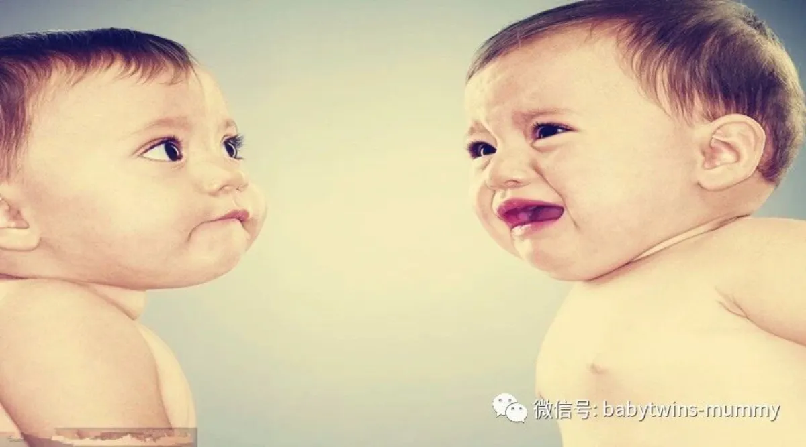
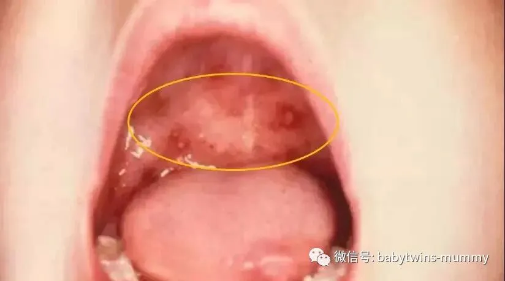

来这里找志同道合的小伙伴！
文|圆圈妈 图片|来自网络
5月26日---6月1日，与病毒持续作战7天6夜
圆圈哥俩的第二次疱疹性咽颊炎终于落下帷幕。
相比去年的那次的“轰轰烈烈”，今年貌似平静多了，
只是起了了点小风浪而已，
我和圆圈爸都是经历过大风大浪的人，
早已是半个儿科医生了。
而且圆圈哥俩的身体一天比一天结实强壮，小小的病毒已经小菜一碟了。
不过仍然把我们累得够呛的！
记录下圆圈的第二次疱疹性咽颊炎，
让他们长大之后看看，做他们的父母得有多辛苦。
2018年5月26日 疱疹性咽颊炎的潜伏期
这天，我和圆圈爸做了个疯狂的决定，
去长沙看望住院的圆圈奶奶。
这一天，圆圈的精神状态都是高度亢奋状态，
看见呼啸而过的火车可以嘶吼上半天，
看见橘子洲的观光小火车，像脱缰的野马，飞快地往小火车车头钻，
看见橘子洲的渡轮，他们居然爬上栏杆，嚷嚷要坐船。
橘子洲返程的路上，圆圈哥俩像泄气的皮球，频频打哈欠要睡觉的节奏，
即便我们如何提醒他们，诱惑他们前方不远处就有观光小火车。
跑了一天，疯玩了一天确实累了，吃饭碗的时候，圆圈哥俩也没有吃多少。
我们以为可能是水土不服，换了口味的缘故。
回酒店给他们每人一瓶鲜牛奶喝完就睡了。
这一天，无任何症状，就是圈圈比平时睡得多，
到长沙之后，会偶尔咳嗽，
我们都以为大深圳来的娃毕竟娇气，不习惯长沙的灰蒙蒙天气。
圆圈哥俩胃口不好，我们也认为是火车上零食吃多了，且没有在规定饭点吃饭。
殊不知这是咽颊炎的前兆啊！
2018年5月27日 疱疹性咽颊炎的前驱期
凌晨5点，圆圈爸把我踹醒了，说“圈圈身上有点烫，感觉像发烧了！”
我一咕噜爬起来，一摸他的额头， “坏了，真的发烧了”
赶紧摸另外一个崽，“额，这个崽没烧！”
可是看圈圈精神貌似不错，没有哭，尿了一泡尿，喝了点水，吵着要看托马斯。
我和圆圈爸马上心神领会，一致决定暂不处理，静观其变。
我发挥我的三寸不烂之舌，硬生生地编出一段奇妙的托马斯探险之旅，
圈圈在满脸的想象中又睡了。
五月的长沙，天空灰蒙蒙的，还有丝丝凉意，
不像深圳蓝蓝的天空，热得可以煎鸡蛋。
天公不作美，长沙下雨了！我们被困在便利店，
一个女人陪着三个男人坐在便利店看了一个半小时的【小猪佩奇】
此时发烧的圈圈依然保持着良好的精神面貌，没有哭闹烦躁。
在便利店实在待不住了，打车去圆圈的姨奶奶家！
圈圈在车上睡着了，浑身滚烫。
身上没有体温计也没有退烧药，我和圆圈爸出奇地淡定从容。
在圆圈的姨奶奶家，看到很多不认识的人，
圈圈开始哭闹了，变得很粘人了，一直要抱着。
尤其是看到一群人围在他身边关心焦急的眼神，
这个小屁孩没有分辨能力，加上身体的不适，
使他陷入了极度的恐慌，非要吵着圆圈爸下楼去。
我们顺势下楼去药店买了退烧药和水银温度计。
此时体温是38°7！
下楼后，圈圈没那么烦躁了，开始把玩这雨伞上面的小雨滴。
我和圆圈爸对视了下，确认过眼神！
决定：不吃药，继续观察！
吃完中饭，要返回深圳了。（圈圈没有吃饭，开始明确拒绝食物）
为了满足圆圈奶奶对孙子的思念之情，
延长圆圈哥俩跟他们奶奶相处的时间，
我们决定坐线路很绕的公交车去长沙南站！
车走了不到十分钟，哥俩都睡着了！
在车上圆圈爸又给圈圈量了体温38°5！
我有点动摇了，催着圆圈爸赶紧给圈圈吃药！
我脑海里浮现了很多不好的影像，
圈圈突发抽搐，全车人围观，司机为了救人闯红灯直奔医院！
抱着圈圈的圆圈爸坚定地说，再看看！
好吧！我忧心忡忡地看着后座那两个男人，独自承受着自找的“胡思乱想”
一个小时后，终于到了长沙南。
我才从“胡思乱想”中解放出来。
在公车上睡了一个小时的圆圈哥俩，在高铁上就开始作威作福了。
已经对边上呼啸而过的火车没有兴趣了，一直嚷嚷着看托马斯小火车，
圈圈对食物依旧没有兴趣，即使他只是早餐吃了个包子喝了半瓶牛奶，他
开始烦躁哭闹了，
圆圈爸连哄带骗地给他量了体温，
还是38°7！
不吃不喝还发烧，摸着手脚好像有点冰凉了，我和圆圈爸的防线终于垮了！
决定给他吃药，希望他吃了药可以睡一觉！
但是直到清远站，他们哥俩依旧精神抖擞！
圈圈吃了药，很快就退烧了。
马上跟打鸡血似的在座位上各种捣腾！
倒是我和圆圈爸累趴了，只好缴械投降，给他们看托马斯。
趁此间隙眯一会儿！
准备到站的时候，给圆圈大姨打了个电话，
咨询小金金（圆圈的小表姐，大半岁）的病情。
小金金前两天发烧了，已经好几天没上幼儿园了。
我在电话里了解到5月22日晚，圆圈有去他们的大姨家玩，跟小金金一起玩积木。
5月23日，微信收到圆圈大姨的信息，小金金发烧！
5月24日，收到圆圈大姨的警告，小金金确诊疱疹性咽颊炎。不肯吃喝，嘴巴有泡泡。
圈圈目前只是发烧，食欲不振，手脚没有气泡，我貌似知道些什么了。
我对着圆圈大姨一阵抱怨，就是你女儿传染给我崽的，
圆圈大姨一阵子委屈和尴尬！
回到深圳已经是晚上九点钟了。
哥俩回到熟悉的家里，看到久违的玩具（只是两天没有玩而已），马上就来劲了！
玩到十点半还不肯去洗澡，还好有新玩具水枪救驾，哥俩屁颠屁颠地跳进澡盆玩水枪！
洗完澡出来，圈圈再次烧起来了，依旧不肯吃喝，
特别烦躁，坐立不安的样子，吵着要爸爸抱着睡。
我和圆圈爸正纠结要不要给他吃药的时候，
他已经趴在毛绒绒的大熊身上睡着了。
好吧！不吃了！
我和圆圈爸的轮流值岗，开始启动！
这一天，圈圈开始发烧，总共断断续续睡了三次。精神时好时坏，开始拒绝吃喝。特别烦躁不安！
2018年5月28日 疱疹性咽颊炎的水泡期
圈圈持续低烧，37°5左右，精神尚可，但是拒绝吃喝！
我们动用一切他可以吃的食物，甚至垂涎已久的冰棒，可是他都不感兴趣。
只是一直哼哼唧唧地粘着大人，非常不爽的样子。
下午，我正在上班，圆圈爸发来消息说圈圈依旧低烧，哭哭啼啼，烦躁不安，喉咙发红，还看见有白色的小圆点在上颚上，嘴巴一直有口水流出来，拒绝一切食物！
圆圈爸打算带圈圈去看医生。
但是我考虑到医院此刻估计是重灾区了，可能没有效果，
反而在院内交叉感染，使病情更加严重了。
在圆圈大姨的建议下，买了蓝芩口服液给他吃！
晚上下班回到家，刚开门，圈圈看见我就扁着嘴大哭，
好像屋子里的所有人都把他欺负个遍似的！
我知道他喉咙很不舒服，需要发泄了。抱着他哄了好一会才消停下来
圈圈对药的抗拒程度非常剧烈。“贞节牌坊”非他莫属了。
为了哄他吃药，从九点钟折腾到十点半，各种方案都使上了，
就是抵死不从！而且哭的很凄惨！
没办法到最后，我们只好走下下策，硬来，灌！
圈圈估计也是筋疲力尽了，看到圆圈爸打算强迫他吃，
他终于在最后关头妥协了，半推半就下喝完了口服液！
为了预防圆圆被传染，也给圆圆吃了三分之二的蓝芩口服液。
圆圆对药一点都不抗拒，当牛奶一样一口气喝掉了。
这一晚，终于安静了，圈圈出汗，退烧了。
2018年5月29日 疱疹性咽颊炎的溃疡期（圈圈）+疱疹性咽颊炎的前驱期（圆圆）
圈圈依旧不肯吃喝。
我在圈圈的咽颊部位，上颚周围，发现小白点变成小红点了，很明显。
原来是疱疹破了，进入溃疡期！
这是最痛苦的时候了。
我把所有能吃的东西都摆在桌面上随便他拿，想吃就吃！
前提是必须先喝水！
圈圈一整天都被圆圈爸用各种理由灌水！
下午，圆圈爸发来一个沮丧的表情。
我知道该来的终于还是来了！
是的！圆圆发烧了！跟圈圈一样，一下子窜到38°5！
我很淡定地指挥着圆圈爸，该干嘛干嘛去！莫慌！
虽然圆圆一岁多有抽搐史，但是他现在体质强壮多了，应该可以扛住的，我让圆圈爸小心伺候着圆圆，万不可掉以轻心，时刻监测圆圆的体温！
晚上7点半，我准备下班回去，接到圆圈爸的电话。
圆圆烧到38°9了！
圆圈爸是吓坏了，直接告诉我，圆圆精神不好，老是哭哭啼啼的，要给圆圆吃药！
好吧！
现在不吃还要等过年吗？
回到家的时候，圆圆正处在药效中，恢复元气，上蹿下跳，
还给我开门，拿拖鞋给我换上。
与昨天的圈圈完全是不一样的反应啊！
这注定是崩溃的一晚！
药效过后，圆圆又烧起来了，没有量体温。
但估计有38°5！
考虑到圆圆对喝水吃药都很配合。
临睡前还喝了150ML 的奶！
反而是溃疡期的圈圈一口奶都不肯喝！
综合考虑，决定不给他吃退烧药了！喝完奶还给他灌了80ML 的温水。
结果就是12点起来一次，2点起来一次，5点起来一次。
都是被尿尿吵醒的！
5点起来那会又给他灌了80ML 水。
喝完水之后，还跟我“膝足长谈”了半个小时。
最后就是一觉睡到八点钟！
这一天是圈圈的溃疡期+圆圆的前驱期。
好在圆圆对疾病的反应程度比较迟钝，
而且对治疗方案比较配合，该吃啥喝啥都不会拒绝。
2018年5月30日疱疹性咽颊炎恢复期（圈圈）+疱疹性咽颊炎水泡期（圆圆）
圆圆低烧。37°5.但是精神还可以！只是胃口没那么好，吃的少。
圈圈已经在恢复期了，愿意吃点东西了。
2018年5月31日疱疹性咽颊炎恢复期（圈圈）+疱疹性咽颊炎溃疡期（圆圆）
早晨圆圆退烧了，胃口不错。喝了150ML 奶+半块包子。
但是有点哼哼唧唧的。
我看到他的喉咙那有零星的小红点，跟圈圈的症状一模一样。
另一边，我检查了圈圈的嘴巴，泡泡只有零星的几处小红点了。
“恭喜你啊，圈圈，你的泡泡消失了。”
怎知，圆圆听到后伤心的哭了，
“我的泡泡没有消失！妈妈，我的泡泡为什么不消失。”
我实在哭笑不得，只好跟他解释，
“泡泡说了还要在你嘴巴多待一天，明天就会自动消失的”
不得不承认圆圆是我的铁杆粉丝，他对我这个当妈的说的话深信不疑。
而圈圈在这一点上，却是有所保留的！
下午，圆圈爸发来一个激动的表情说圈圈吃了两大碗面条！
嗯，看样子可怕的疱疹性咽颊炎快要偃旗息鼓了。
2918年6月1日 疱疹性咽颊炎恢复期（圆圆圈圈）
圆圈哥俩一大早就开始开战，打起来了！原因不详！
我笑醒了，还能打得再激烈点吗？
至少可以证明，他们终于“元神归位”了。
今天是你们的节日啊，你们终于赶在节日之前把病毒给打败啦！
简直是双喜临门啊！
圆圈妈的经验分享：
网上说，病程会持续1—2周，圆圈基本上5—6天就康复了。
不像去年第一次感染上咽颊炎，整整持续了2周，后面还咳嗽了个把星期。
总结，这跟我们的护理有很大的关系。
治疗咽颊炎没有特效药，除了发烧的时候，吃退烧药，
还有一个神奇且唯一有效的办法就是多喝水。
圆圆是最好的例子，基本上他只痛苦了3天。
他比圈圈轻松多了，没有受多大罪，这跟他很配合治疗有关，
除了配合吃药，他喝水也多，
一来可以补充身体水分，二来能让体内的毒素、病毒更快的排出体外，
圈圈喝水少，自然康复的慢。
其实很多情况下孩子是不配合喝水的，因为吞咽的动作会让他们更痛，
这个时候可以给他们吃点凉的，冰的，易咀嚼，易消化的食物
尤其是孩子好长时间没喝水，嘴巴干裂的情况下，更要尽快补充液体了
可是碎碎冰，冰棍，雪糕，有水分的火龙果，西瓜，香梨等。
不用担心孩子吃冰的会加重病情，
实际上，冰的东西可以缓解他们喉咙的不适感和疼痛感，
不多吃，是完全没有关系的！
咽颊炎前驱期，孩子会发烧，这个时候很容易高热惊厥。
尤其要在这个阶段注意，随时检查孩子的体温，摸摸他们的手脚。
如果手脚冰凉，身体滚烫，那要尽快给他们捂热手脚，免得温度急速上升，引发抽搐。
如果手脚跟身体都很烫，体温没有明显的变化，那应该问题不大，可以做物理降温，丢到澡盆上泡一会儿。
至于要不要吃药，什么时候吃退烧药，得根据孩子的实际情况做决定。
这个其实也跟家长的承受能力有关，有些家长就是不忍心看到孩子那么难受，只要发烧就赶紧给药吃，
有些家长比较 “虎爸虎妈”不到万不得已，坚决不吃药。
最后六一儿童节快乐，祝愿每一个孩子都能健康快乐地成长！
*作者简介：圆圈妈，家有孖仔男两枚，立志做一名合格的80后全职妈妈。
微信公众号ID：babytwins-mummy 孖仔帮
个人博客：三个男人（www.sgguy.com）
一个专注双胞胎群体的网站，面向家长，每天分享亲子养育知识。
↓点击下方“阅读原文”查看更多

